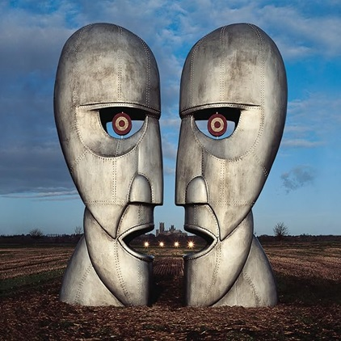

Produto
Vinil Pink Floyd- Division Bell
por R$600,00

Sobre o Produto:
The Division Bell é o décimo quarto álbum de estúdio da banda britânica de rock Pink Floyd. O disco foi lançado em 1994 e é o segundo sem o baixista Roger Waters. Suas canções foram escritas principalmente pelo guitarrista David Gilmour e pelo tecladista Richard Wright e tem como principal tema a falta de comunicação, junto com outras questões como o isolamento, conflitos e autodefesa.
| Características | Detalhes |
|---|---|
| Data de Lançamento | 29/09/1977 |
| Estilo | Pop Rock |
| Remasterizado | Não |
| Dimensões do Produto | 31,32 x 31,67 x 0,74 cm |
| Peso da Produto | 571,53g |